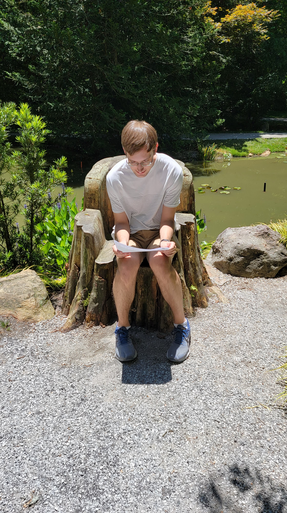

On Tuesday I did a tiny bit of work on the ShexJ transformer library. But, I was distracted with a few other things too. Though I can't really remember what they were. Michael and Maya were in the house, but they weren't a huge distraction from work.
Tuesday was also the day to talk with Didier, and I think it went well. We talked about the things that can be done with Solid. And when I talked about building a system that would allow students to opt into having their academic data stored on their personal Pod, he answered with "What would you need to raise money to build that?" I told him if I got a commitment from Georgia Tech I could probably raise money on that. At the end of the meeting we decided to set up another meeting with the head of Digital Tools at Georgia Tech. That one will be on June 11th.
Also I think it was this day that I was alerted by Charlie that he found another job and could no longer work with O. I spent too long looking for money and now I'll need to find someone else who believes in the vision to help out once I raise. But, that's fine. Life goes on.
We woke up early on Wednesday to go to the airport. A while ago James contacted me about going to visit my parents for a week, so that's what we're doing. Michael and Maya are watching Licky while we're gone.
Due to stubborness on my part, Ailin and I were on separate flights (Hers was the cheapest she could find, and mine was bought with skymiles). I arrived at in Atlanta first and waited for her to land before going to my parents place. Once there, we had a nice dinner and walked sledge, but we also got a bit of work done. In my work on the Shex library, I found that I wanted to have a more robust dataset library that could parse JSON-LD, so I began refactoring that.
I got to see Alpharetta's version of the "Beltline:" the "Alpha Loop." It made me realize that the Beltline without rail is really just a recreational thing and not something that will truly connect communities. It's really nice and I love it, but the transit portion is needed too and that's something the Alpha loop lacks.
We needed to start the day by picking James and Katlyn up from the airport. We had brunch before coming up to the house where I continued to work on the JSON-LD support for the dataset library. I completed that and deployed it.
I also had a meeting with Justin Bingham where I told him about the Georgia Tech project. He gave me some advice to structure the business model as a per student per month model. I should not be charging for labor. He's right, and I'm glad to have him as someone to get advice from. He's experiencing the same thing in the healthcare space.
So, the following days should focus on building a business plan.
In the evening we went to another dinner in Alpharetta (this time food trucks) and retired back home.
On Friday, I began the business plan but didn't get too far. I looked through the pricing of other learning management software and came to the conclusion that $3 per student per month would make sense for my solution.
After that, we were invited to go to a "Gibb's Gardens". Ailin couldn't go because of her IBM work :( but I went. It was rather serene. I think it would be a good idea to turn a garden like that into a resort hotel with little cottages that could be rented. If you'd like to go even farther, you could structure it as a fantasy land and have activities to do around the garden. Like a cruise ship but on land (A camp for adults?). Here are some pics:
On Saturday, I needed to drop James off at a friend's place, but after that. Ailin and I had the car. At first we were just going to work, but then we decided to save that for Sunday. We had lunch on Buford Highway at the Buford Highway Farmer's Market (Probably the most diverse assortment of food I (or Ailin) have ever seen).
After that, we went up to Amicalola Falls for another inspiring hike. The falls are much bigger in person than they seem in these images:
On Sunday, I decided the most important thing I could be doing was building a slide deck to go to Thiago. If I had Thiago on board as an investor, he could help bolster the realtionship with Georgia Tech, and the representatives of Georgia Tech would be happy because of the close relationship with Engage and Tech Square Labs. I began, but didn't complete the presentation.
A good part of my day was spent picking up James and Kaitlyn from their various friends places. They have a lot more friends who've stayed in Georgia, so their social lives seems to be quite busy.
Thoughtout this week we've also been taking care of the logistics behind a move to San Francisco. Getting plane tickets, signing leases etc. I really hope Ailin likes it. When we were discussing it earlier she said she was ambivalent to where we were moving as long as it wasn't Atlanta. Moving back to Atlanta would have been nice especially given everything goes well with the GT deal, but SF was okay. Though, I increasingly feel guilty about forcing SF onto her. Every time I ask about it she says its not a problem, but I'm afraid that members of my family think that I'm forcing it onto her. Hopefully all the stress around that will discipate once we're there.
We also finally watched Hamilton on Disney Plus. It is much better seeing the play in "person" than just listening to the soundtrack.
On Monday I completed my slide deck for Thiago and fortunately I was able to arrange a meeting with him at 10:00am on Tuesday. So, we have that to look forward to.
I also did an assessment of finances and turns out I'll be paying less in reoccurring expenses next month! That's a relief.
We ended the day with family game night. James Kaitlyn and Ailin go back tomorrow, but again because of my strange plane ticket situation, I go back on Wednesday. Tomorrow's a big day and I can't wait to get going with it. I feel like things are starting to look up. The Georgia Tech deal is a stepping stone to really establishing Solid in the mainstream. Tech students are the perfect early adopters and I love the organization that I'd be working for.